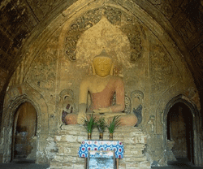
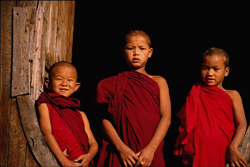
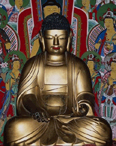
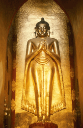
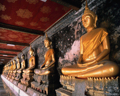
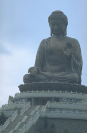

| Буддизм http://schools.keldysh.ru/school1413/religija/budd.htm |
|  |  |  |
|  |  |  |
| В 1996 году в мире было более 320 миллионов буддистов. Но эта цифра говорит только о так называемых “чистых” буддистах, которые одновременно не исповедуют других религий (что в буддизме возможно). Если же учитывать и “чистых” и “нечистых”, то буддистами являются около 500 млн. человек.
Буддизм возник в Индии в VI в. до н.э. Основатель буддизма имел четыре имени. Первое: Гаутама. Второе его имя: Сиддхартха. С санскрита оно переводится как “Выполнивший своё назначение”. Третье его имя: Шакьямуни (“Мудрец из племени Шакья”). И четвертое его имя: Будда (“Просветлённый высшим знанием”). Поскольку в дальнейшем в буддизме слово “будда” стали использовать для обозначения особой группы богов и поскольку основатель буддизма стал почитаться как первый и высший бог в этой группе, постольку об этом боге можно сказать, что он будда по имени Будда. В I в.н.э. первоначальный буддизм разделился на две малые религии - на хинаяну (“малая колесница”) и махаяну (“большая колесница”), которую также называют “тхеравада” (“учение старших”). Сторонники хинаяны и сторонники махаяны разошлись главным образом в ответе на вопрос: кто из людей имеет возможность после жизни на земле попасть в высший рай, называемый нирваной. Сторонники хинаяны утверждали и утверждают, что только монахи и монахини могут попасть в нирвану. А сторонники махаяны убеждены, что в нирвану могут попасть и рядовые верующие. В XI-XII вв. буддизм был вытеснен из Индии индуизмом. В настоящее время буддистов на родине буддизма менее одного процента от всего населения. Буддизм переместился из Индии в другие страны Азии. В конце XIV - начале XV вв. в Тибете в результате откола от махаяны возникла третья крупная конфессия в буддизме, которую историки называют ламаизмом (от тибетского “лама” - “высочайший”). Сами сторонники этой конфессии называют её “гелукпа” (“школа добродетели”). Всего в буддизме более 200 конфессий. В частности, множество конфессий существует в Японии. Некоторые из них насчитывают всего лишь несколько десятков тысяч человек. Так, в конфессии дзи - 85 тысяч, в конфессии кагон - 70 тысяч, в конфессии хоссо - 34 тысячи, в конфеcсии рицу - 12 тысяч последователей. В настоящее время буддисты преобладают среди верующих в 8-ми странах мира. Буддисты хинаяны составляют такое большинство в Кампучии, Таиланде, Мьянме, Лаосе, Шри-Ланке; буддисты махаяны во Вьетнаме; буддисты-ламаисты - в Бутане и Монголии. Около 26 веков назад Учение Будды указало путь к счастью и внутреннему миру для многих миллионов людей в этом скорбном мире. Но кто он был такой — Будда Шакьямуни? Будда родился человеком в Северной Индии, сыном короля Шуддходаны и королевы Майи. Ему было дано имя принц Сиддхартха Гаутама. При его рождении было предсказано, что принц или станет мировым лидером (всемирным монархом) или Буддой (Пробужденным). Это зависело от того, вступит он или нет в соприкосновение с превратностями жизни — с обретением и потерей, восхвалением и порицанием, славой и неизвестностью, наслаждением и болью. Имелось в виду, что после понимания трех характеристик жизни, то есть болезни (ограничение), старение (распад) и смерть (обязательный конец всех составных вещей), он будет глубоко взволнован последствиями, которые существуют в нашей жизни. Много лет король Шуддходана заботился о том, чтобы принц не сталкивался с этим, потому что он не желал, чтобы тот подверг сомнению истинную природу жизни. Окруженный ежедневными удовольствиями и роскошью, принц был огражден от неприятной стороны жизни. Он женился на принцессе Яшодхаре, которая родила ему сына, Рахулу. Несмотря на все предосторожности короля, у него не было возможности оградить принца от наблюдения старения, болезни и смерти. В соответствии с предсказанием при его рождении принц встретил старого человека, больного человека и похоронную процессию. Затем он встретил нищего монаха (саману). В результате первый трех встреч ему стала ясна тщетность жизни, и четвертая встреча показала ему безмятежность (святость) того, кто отказался от мира и кто освободил себя от его влияния. В возрасте 29 лет принц (тогда еще бодхисаттва) отказался от мирской жизни, и в течение шести лет предпринял чрезвычайно строгие аскетические практики. В конце концов, он понял, что путь чрезвычайного самоотречения и голодания не был путем, и тогда он обнаружил Срединный Путь. Вслед за этим, в возрасте 35 лет, он достиг Просветления и стал Буддой. Вот что Будда сам сказал об этом: " Я зовусь Буддой, потому что я понял Четыре Благородные Истины". Сорок пять лет Будда проповедовал Дхарму всем, "кто имел уши, чтобы слышать, глаза чтобы видеть и ум, чтобы понимать" — Дхарму, которая является прекрасной в начале, прекрасной в середине и прекрасной в конце. Он учил людей тому, что мы должны сами осуществить Просветление в своей собственной жизни. В возрасте 80 лет Будда вошел в Махапаринирвану, оставив Учение как свое наследие. Будда - Пробуждённый, Просветлённый. Это не имя, данное личности, а состояние ума. Будда является Всемирным Учителем, провозглашающим и объясняющим Четыре Благородные Истины, таким образом он способен направить других по пути к достижению такого же просветления. В Каноне Всемирный Учитель соответствует Самма-Самбудде, а его Просветлённые Последователи называются Архатами (Архата-Буддами). Дхарма - учение Будды. Слово "дхарма" имеет много значений, к тому же Учение Будды соответствуют Будда-Дхарме, термину, который большинство буддистов предпочитает "Буддизму". Четыре Благородные Истины Почему эти Четыре Истины названы благородными? Потому что они способны сделать практикующего благородным. Если они практикуются надлежащим образом, практикующий обретает непосредственный опыт свободы ума, и это делает его благородным. Благородная истина страдания "Рождение есть страдание, старение есть страдание, болезнь есть страдание, смерть есть страдание, горе и печаль, боль и скорбь есть страдание, сосуществование с тем, что неприятно есть страдание, разлука с любимым есть страдание, неисполнение желаний есть страдание, одним словом, всё, составляющее жизнь, есть страдание". Как красивые, приятные, так и болезненные, неприятные обстоятельства являются непостоянными. Эти формы являются прямой угрозой человеческому существованию и следовательно, источником беспокойства, волнения и т.д. Благородная истина причины страдания Причиной страдания является желание или стремление (танха). Поскольку мы находимся в состоянии противоречия с обстоятельствами внутри и вне нас, возникает неутолимая жажда приятных ощущений. Основой для этого является иллюзия неизменности души, эго или личности. Таким образом, мы оказываемся в плену у самих себя, в плену у окружающих нас вещей, запутавшись в сети страдания. Поэтому Будда говорил: "Не попадайтесь на приманку мира", потому что страдание — неизбежно. Благородная истина прекращения страдания Тот, кто преодолеет неведение, иллюзию самости, станет свободными от желания. Огонь страсти угаснет, если нет горючего. Те омрачения, которые мы ещё не преодолели и которые привязывают нас к Циклу Перерождений, служат горючим для нескончаемых перерождений в сансаре — обусловленном, зависимом существовании. Благородная истина пути, ведущего к прекращению страдания Благородный Восьмеричный Путь говорит о том, что ведёт к прекращению страдания: |
|
* Правильное понимание — воззрение и мудрость в соответствии с Истинами.
* Правильное мышление — мыслить без эгоизма, гнева и жестокости. * Правильная речь — говорить правдиво, не вести сплетен и не клеветать, не использовать грубую речь и не пустословить. * Правильные действия — не убивать и не наносить ущерб людям и животным, не красть прямо или косвенно, не доставлять себе удовольствие в ущерб другим. * Правильные средства к существованию — иметь честную и благородную профессию. * Правильные усилия — способствовать появлению и росту благоприятного, и к уменьшению и прекращению неблагоприятного. * Правильная осознанность — осознанность того, что возникает здесь-и-сейчас. * Правильное сосредоточение — быть направленным и сконцентрированным на благоприятном объекте или быть в состоянии здесь-и-сейчас. |
|
Три Качества Жизни Все составные вещи непостоянны (аничча), неудовлетворительны (дуккха), и бессамостны (анатта). Эти три аспекта называются Три Качества или Три Признака Жизни, потому что все составные вещи управляются этими тремя. Аничча означает временное, непостоянное, изменчивое. Всё, что возникает, подвержено разрушению. Фактически, ничто не остаётся таковым в течение двух последующих мгновений. Всё подвержено безостановочному изменению. Три фазы возникновения, существования и прекращения могут быть обнаружены во всех составных вещах; всё имеет склонность к прекращению. Вот почему важно понять сердцем слова Будды: "Временность является обусловленной вещью. С усердием добивайся достижения своей цели". Дуккха означает страдание, недовольство, неудовлетворённость, то, что трудно переносить, и т.д. Это происходит потому что всё, что является составным, изменчиво и, в конечном счёте, несёт страдание тем, кто в это вовлечён. Подумайте при этом о болезнях (в противоположность нашей идее о здоровье), о потерянных любимых и близких людях или животных, или о противостоянии превратностям судьбы. Ничто, зависящее от условий, не стоит цепляния, потому что делая это мы лишь приближаем несчастье. Анатта означает бессамостность, не-"я", не-эго, и т.д. Под анатта подразумевается факт того, что ни в нас самих, ни в ком-либо другом пребывающая в центре сердца сущность не является сущностью (сунната) как таковой. Вместе с тем анатта означает не только отсутствие "я", хотя к этому и ведёт её осмысление. Через иллюзию существования "я" (души или неизменной личности) и неизбежно сопровождающую идею "я" возникают неверные представления, которые выражаются в таких аспектах как гордыня, высокомерие, жадность, агрессия, насилие и вражда. Хотя мы и говорим, что это тело и ум наши, это не соответствует действительности. Мы не можем постоянно поддерживать тело здоровым, молодым и привлекательным. Мы не можем постоянно придавать своим мыслям позитивную направленность, в то время как наш ум пребывает в несчастном или негативном состоянии (что само по себе доказывает то, что мышление не может находиться под полным нашим контролем). Если постоянного "я" или самости не существует, то есть только физические и ментальные процессы (нама-рупа), которые в сложной взаимосвязи с обусловленностью и взаимозависимостью формируют наше существование. Всё это формирует кхандхи, или (пять) групп, которые непросветлённая личность рассматривает как чувства (ведана), шесть видов чувственных ощущений (санна), волевые конструкции (санкхары) и другие виды сознания (виннана). Из-за непонимания взаимодействия этих групп человек думает, что существует "я" или душа, и он приписывает непознанное неизвестной, потусторонней, неведомой силе, которой он также должен служить, чтобы обеспечить себе безопасное существование. В результате несведущая личность постоянно пребывает в напряженном состоянии между своими желаниями и страстями, своим неведением и представлениями о реальности. Тот, кто понимает, что идея "я" — это иллюзия, может освободить себя от страданий. Достичь этого можно следуя Благородным Восьмеричным Путём, который способствует нравственному, интеллектуальному и духовному развитию практикующего. Четыре возвышенных состояния ума Четыре возвышенных состояния ума — брахмавихара на пали (язык, на котором говорил Будда и на котором записаны его учения) — это четыре качества сердца, которые, будучи развиты в совершенстве, поднимают человека на высший духовный уровень. Они есть: Метта, которое может быть переведено как любящая доброта, всеобъемлющая любовь, доброжелательность, бессамостная всеобщая и безграничная любовь. Метта указывает на качество ума, которое имеет целью достижение счастья другими. Прямыми следствиями метта являются: добродетель, свобода от раздражительности и возбуждённости, мир внутри нас и в отношениях с окружающим миром. Для этого следует развивать метта ко всем живым существам, включая самых мелких. Не следует путать метта с чувственной и избирательной любовью, хотя метта и имеет много общего с любовью матери к её единственному ребёнку. Каруна, что означает сострадание. Свойством каруна является желание освободить других от страдания. В этом смысле сострадание является чем-то совершенно отличным от жалости. Оно ведёт к великодушию и желанию помочь другим словом и действием. Каруна играет важную роль в Учении Будды, которое называется также Учением Мудрости и Сострадания. Именно глубокое сострадание Будды привело его к решению разъяснить Дхарму всем живым существам. Любовь и Сострадание — это два краеугольных камня практики Дхармы, поэтому Буддизм иногда называют религией мира. Мудита — это сочувственная радость, которую мы ощущаем, увидев или услышав о счастье и благополучии других, это радость успеху других без оттенка зависти. Через сочувственную радость мы развиваем такие качества сердца, как счастье и нравственность. Упеккха или равностность указывает на спокойное, устойчивое и стабильное состояние ума. Оно особенно проявляется при столкновении с несчастьем и неудачей. Некоторые с невозмутимостью встречают любую ситуацию с одинаковым мужеством, без волнений и отчаяния. Если они узнают о чьей-то неудаче, они не испытывают ни сожаления, ни радости. Спокойно и непредвзято они относятся одинаково ко всем, в любой ситуации. Регулярное размышление над действиями (карма) и их результатами (випака) разрушает предвзятость и избирательность, приводя к осознанию того, что каждый сам является хозяином и наследником своих поступков. Таким образом, возникает понимание того, что хорошо и что плохо, что благотворно и что неблаготворно и, в конечном счёте, наши действия станут контролируемыми, ведущими к добру и далее к высшей степени освобождающей мудрости. Ежедневная медитация с целью развить эти Четыре Высших Состояния Ума сделает их привычными и таким образом приведёт к внутренней стабильности и избавлению от помех и препятствий. В любой религиозной, философской или идеологической системе существуют этические нормы, которые нельзя нарушать ее последователям или приверженцам. В большинстве религиозных систем эти этические нормы объединены в законы, которые приписываются и устанавливаются Богом или сверхъестественной силой, находящейся вне человека. Учения же Будды являются психолого-этической системой, в которой этические нормы обуславливаются психологической подоплекой и мотивацией наших действий. Для тех, кто действует вне чистых мотиваций, таких, как непривязанность, дружелюбие и понимание (мудрость), достижение счастья будет чем-то очевидным, вот только их собственные проблемы никогда не исчезнут. Но те, кто действует вне негативных мотиваций, таких, как привязанность, недоброжелательность и непонимание (неведение), будут избегать страданий. Благородный Восьмеричный Путь включает в себя этические нормы, а именно: Правильная Речь, Правильные Действия и Правильные Средства к существованию. Последователю предлагается минимальные правила в форме пяти правил (панчашила): Я буду воздерживаться от убийства и насилия... от взятия того, что не дано... от чувственного проступка... от неправдивой речи... от принятия опьяняющих и одурманивающих веществ. В Буддизме нет места приказам и запретам. Нет места и комплексу вины. Это скорее одобрение хороших поступков и воздержания от недостойных действий обмана, насилия и опьянения ума. Правильные Средства к существованию означают, что наша деятельность не должна быть сопряжена с насилием над другими живыми существами, например, торговля живыми или мёртвыми (вследствие убоя) существами, ядами, оружием или опьяняющими веществами. При выборе профессии нам следует склоняться в сторону факторов доброжелательности и полезности с одной стороны, и сострадания и мудрости с другой. Последователи могут в свободные дни, или один-два раза в месяц, следовать восьми правилам. Таким образом, они учатся контролировать свой ум на благо себя и других. Вот эти восемь правил: я буду воздерживаться от убийства... от взятия того, что не дано... от неправдивой речи... от опьяняющих веществ... от принятия пищи до 6 часов (утром) и после полудня... от украшения тела и развлечений... от использования кроватей и кресел, способствующих лени. Подобно этим правилам, Будда учил тому, как мы можем жить, не принося страдания другим, и как мы можем быть творцами как своего собственного счастья в этом и последующих существованиях, так и безусловной свободы от всех страданий. В этих рамках нравственное поведение обусловлено состраданием ко всем живым существам. Эти нравственные принципы являются всемирными законами, не зависящими от личности. Поэтому, такие идеи как "заповеди предписанные Богом" неизвестны в Буддизме. Мы сами ответственны за свои действия и их результаты. Каждый может сам для себя решить какие правила и в какой мере он желает их соблюдать. Нравственность (шила) сама по себе не является целью, она — средство достижения духовного развития мудрости, в целях 1) обучения управлению противостоящих сил, 2) развития благоприятных качеств, и 3) создания основы для дальнейшего развития ума, с конечной целью полного освобождения ума от страдания. Карма или волевая активность является важным понятием в Учениях Будды и она означает закон Причины и Следствия. В этой жизни мы сталкиваемся с разными людьми. Один рождён в среде аристократов, другой среди трущоб; один негодяй, другой благороден; один живёт долго, другой мало; кто-то подвержен болезням, другой обладает завидным здоровьем; есть обреченные неудачники, есть удивительные счастливчики. Это не "божий промысел", а результат своих собственных предыдущих действий. Каждый сам создает свои условия. Вот почему Закон кармы не является законом наказания и вознаграждения, но исключительно законом причины и следствия, действия и реакции на это действие. Поэтому мы не можем считать виноватым кого-то другого за наши несчастья. Их возникновению в большинстве случаев способствует иной фактор. Мы сами являемся творцами, создающими себе условия, как приятные, так и неприятные. Нам не следует искать "милосердие" нигде, кроме как в своём собственном уме. Вот почему Будда указывает как бедным, так и богатым на то, что они сами явились причиной своих условий, и то же самое происходит с ними в настоящее время. Вот почему одобряются действия богатых, направленные на благотворительность и способствующие выходу бедных из их нищеты, и работа бедных с целью улучшить своё положение, а не пассивное прозябание в бедности. Плохие и хорошие действия определяются их психологическим фоном, мотивацией. Если личность ведома алчностью, ненавистью и заблуждением, то, естественно, данное действие вызовет страдание, в то время как отсутствие этих трёх Корней Страдания принесет счастье и гармонию. В соответствии с личными действиями, жизненный поток, формирующий ныне наше существование, после смерти стремится к новому воплощению, и таким образом происходит новое рождение. Если неведение и жажда жизни устраняются, то нового рождения не наступает. В соответствии с Учениями Будды не существует души, переходящей или перерождающейся из одной жизни в другую, т.к. не существует — как мы только что убедились — постоянной души или "я". Наша жизнь может быть сравнена с движением и движущей энергией, которая подпитывается и направляется нашими действиями. Так же как отсутствует идентичность или сущность "электричества" необходимого для движения тока в проводах, точно так же не существует души или "я", необходимой для перерождения. Пока есть кармическая энергия, есть перерождение, подобно тому, как продолжает гореть фитиль лампы, пока есть масло. Для того чтобы остановить эту энергию и освободиться от страданий мы должны приложить усилия, ведущие к уничтожению скрытых тенденций, действующих в наших сердцах. Они есть: вера в "я", вера в то, что церемонии и ритуалы приведут к освобождению, скептическое недоверие, привязанность, недоброжелательность, тщеславие, волнение и невежество. Правильным направлением для этого является практика Благородного Восьмеричного Пути, которая означает развитие Нравственности, Сосредоточения и Мудрости. За последние годы Буддизм стал известен широкой публике, и интересующиеся могут изучать различные Буддийские школы и традиции. Постороннего наблюдателя может смущать множество течений и внешнее различие форм, в которых проявляет себя Буддизм. Некоторые неспособны увидеть Дхарму за этими течениями. Их может оттолкнуть то, что они искали единство в мире, разделено сектами и конфессиями. Введённые в заблуждение утверждением какой-либо секты типа "моя школа лучше и выше твоей школы", они могут не заметить ценность Дхармы. Будда учит различным путям, ведущим к Просветлению (бодхи), и каждый из них равноценен, иначе Будда не учил бы им. Мы можем назвать это Колесницей Будды (Буддаяна). Важными качествами в Учении являются Любящая Доброта (метта), Сострадание (каруна), и Мудрость (панья). Они являются центральными в любой школе Буддизма. Со времени Первого Учения Будды, а это около 26 веков, Буддизм распространился по всей Азии. До победы коммунизма в Китае около трети населения Земли исповедовало Буддизм. Каждая страна развила свою особую форму. Основными буддийскими странами являются: Камбоджа, Япония, Южная Корея, Мьянма, Сингапур, Шри-Ланка, Таиланд, и Тибет. Также буддисты есть в Бангладеш, Китае, Индонезии, Непале и Вьетнаме. Среди множества различных школ мы можем выделить следующие: Тхеравада: Ранний буддизм, главным образом практикуется в Мьянме (Бирма), Шри-Ланке и Таиланде — эта школа использует ранние тексты, написанные на пали. Упор делается на путь Архата-Будды, но также практикуется путь Самма-Самбудды. Здесь гораздо меньше ритуалов, чем в большинстве других школ. Махаяна: Новые Школы, называемые: Тибетский Буддизм: в Тибетском Буддизме упор делается на путь Самма-Самбудды. Они делят свою систему на Хинаяну (Малую Колесницу), Махаяну (Большую Колесницу) и Ваджраяну (Алмазную или Высшую Колесница). Учения Будды изложены на тибетском. Хотя Далай-лама иногда рассматривается как глава всех буддистов, он исключительно только глава Тибетского Буддизма. Дзен: Эта форма буддизма развила медитацию Самадхи, направленную на достижение дхьян (по-китайски чань), и в особенности популярна в Японии. Учения Мастеров Дзен играет важную роль. Учения же самого Будды играют, как правило, второстепенную роль. Китайский Буддизм: Наряду с текстами (на китайском и санскрите) важную роль играют высказывания Патриархов. Как и в других школах Махаяны, имеет место сильная связь с идеалом Бодхисаттвы, т.е. работа на благо всех живых существ и откладывание собственного Просветления до того, как все существа смогут достичь такого же просветления. Основную роль играет Куан Йин (в тибетском буддизме Ченрези или Авалокитешвара). Каждая страна имеет свою буддийскую культуру, но суть Учения Будды везде одна. Мой призыв к буддистам во всём мире заключается в том, чтобы они продолжали объединяться как последователи одного Учителя, и вместе мы поможем воссиять свету Мудрости и Сострадания в мире. |